1 Primeiras noções sobre redes neurais
% vetor
1.1 Fonte
Este capítulo transcreve uma apresentação de slides que fiz sobre este assunto.
Boa parte do material apresentado aqui vem do capítulo 10 do livro James et al. (2021), que também está disponível online.
Além disso, você pode assistir a uma playlist com mais de 100 vídeos, sobre os assuntos do livro James et al. (2021), apresentados pelos próprios autores.
1.2 Sumário
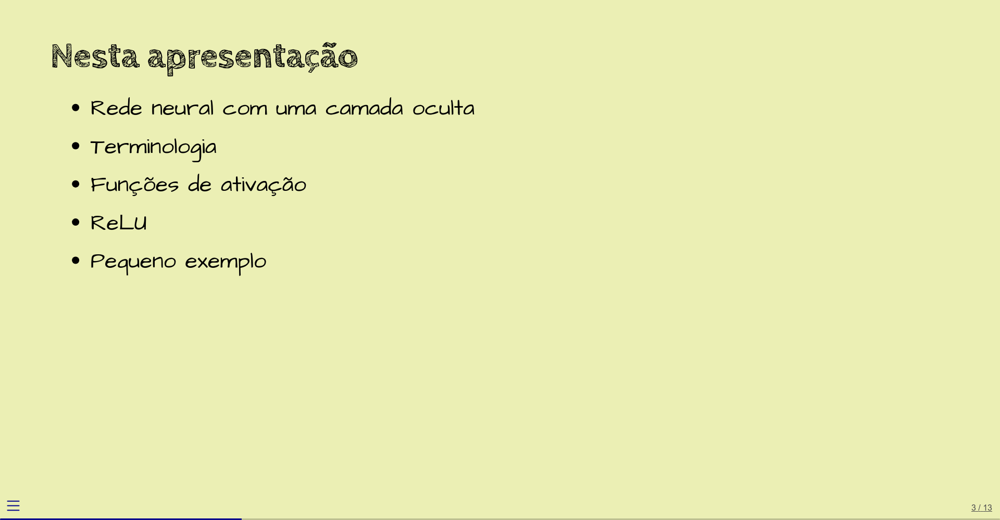
1.3 O que é uma rede neural
Neste diagrama, vemos uma rede neural com uma camada oculta.
Os quatro nós à esquerda (\(X_1\) a \(X_4\)) representam simplesmente os valores dos dados de entrada da rede. Apesar de não acontecer nenhuma computação nestes nós, muitas fontes consideram que estes nós formam a camada de entrada.
Os cinco nós azuis na coluna do meio (\(A_1\) a \(A_5\)) formam a camada onde a maior parte da computação acontece. É a camada oculta.
O nó cor-de-rosa à direita produz o valor de saída da rede. É a camada de saída. Nem sempre a camada de saída vai consistir de apenas um nó.
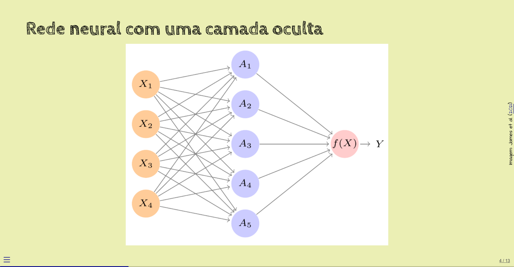
As setas indicam como os valores dos nós são usados nas computações.
Por exemplo, o nó \(A_1\) calcula uma função dos quatro valores de entrada. Vamos chamar esta função de \(h_1\):
\[ A_1 = h_1(\overrightarrow{X}) = h_1(X_1, X_2, X_3, X_4) \]
(\(\overrightarrow{X}\) significa um vetor de valores, aqui com \(4\) elementos.)
A função \(h_1\) começa calculando a seguinte combinação linear dos elementos do vetor:
\[ w_{10} + w_{11} X_1 + w_{12} X_2 + w_{13} X_3 + w_{14} X_4 \]
Os coeficientes \(w_{ij}\) são chamados de pesos, ou parâmetros.
Você pode imaginar que, no diagrama, cada seta corresponde a um peso:
- \(w_{11}\) corresponde à seta de \(X_1\) para \(A_1\),
- \(w_{12}\) corresponde à seta de \(X_2\) para \(A_1\),
- \(w_{13}\) corresponde à seta de \(X_3\) para \(A_1\), e assim por diante.
Mas, aqui, a seta que corresponde a \(w_{10}\) não é mostrada. Algumas fontes representariam este peso como uma seta que vem “do nada” para o nó \(A_1\). Outras fontes representariam este peso como um valor dentro do nó \(A_1\).
O resultado desta combinação linear é enviado para uma função \(g\), fazendo, então, com que a saída do nó \(A_1\) seja
\[ A_1 = g\;(w_{10} + w_{11} X_1 + w_{12} X_2 + w_{13} X_3 + w_{14} X_4) \]
ou, usando notação de somatório, mais compacta,
\[ A_1 = g\left( w_{10} + \sum_{j=1}^4 w_{1j} X_j\right) \]
A função \(g\) é chamada de função de ativação, e costuma ser uma função não-linear. Mais adiante, vamos ver exemplos específicos de funções de ativação.
Se a função \(g\) fosse linear, a rede neural seria equivalente a regressão linear.
Ou seja, é a não-linearidade da função de ativação que faz com que uma rede neural possa computar funções que modelos não-lineares não são capazes de computar.
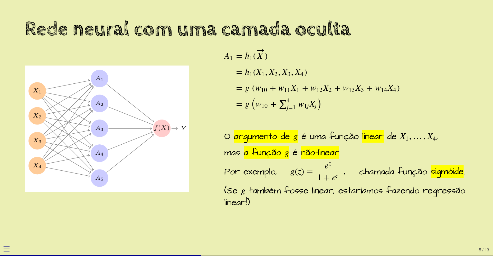
Os outros nós da camada oculta, \(A_2\) a \(A_5\), computam funções parecidas com a função computada pelo nó \(A_1\), mas com outros pesos.
Ou seja, no geral, para cada nó \(A_i\),
\[ \begin{aligned} A_i &= g\;(w_{i0} + w_{i1} X_1 + w_{i2} X_2 + w_{i3} X_3 + w_{i4} X_4) \\ &= g\left( w_{i0} + \sum_{j=1}^4 w_{ij} X_j\right) \end{aligned} \]
A função de ativação \(g\) costuma ser a mesma para todos os nós de uma mesma camada.
Terminada a computação da camada oculta, os valores de saída de \(A_1\) a \(A_5\) são enviados para o (único) nó da última camada, que produz \(Y\), o valor de saída da rede:
\[ \begin{aligned} Y &= \beta_0 + \beta_1 A_1 + \beta_2 A_2 + \beta_3 A_3 + \beta_4 A_4 + \beta_5 A_5 \\ &= \beta_0 + \sum_{k=1}^5 \beta_k A_k \end{aligned} \]
Aqui, neste exemplo, \(Y\) é função linear das saídas dos nós da camada oculta, mas é comum que \(Y\) também seja resultado de uma função não-linear.
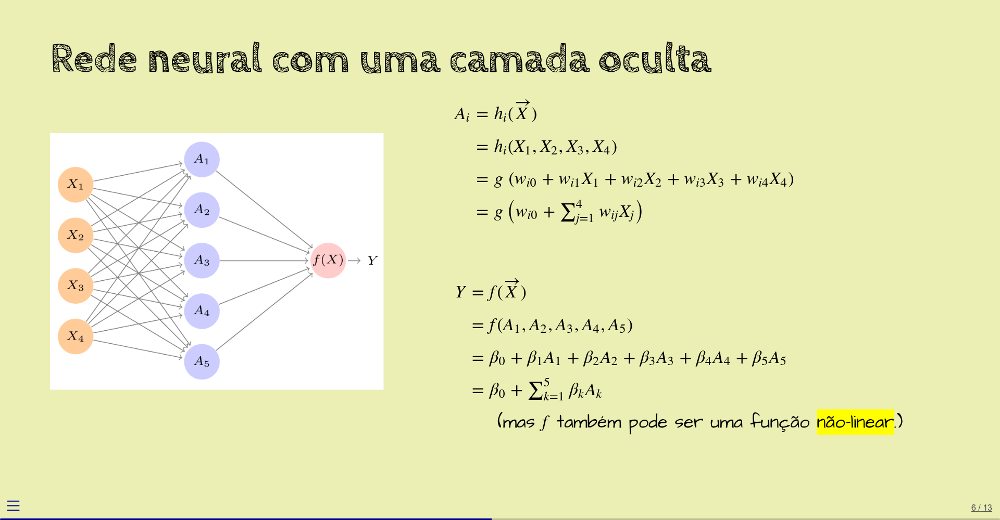
Resumindo, os valores dos nós são:
\[ \begin{aligned} A_i &= g\left(w_{i0} + \sum_{j=1}^4 w_{ij} X_j\right) \\ Y &= \beta_0 + \sum_{k=1}^5 \beta_k A_k \end{aligned} \]
Esta rede tem \(4\) entradas, uma camada oculta com \(5\) unidades e função de ativação \(g()\), uma camada de saída com uma unidade (com função de ativação linear), e, como pesos (ou parâmetros), o seguinte conjunto de valores:
- \(w_{ij},\, 1 \leq i \leq 5,\, 0 \leq j \leq 4\) (\(25\) parâmetros),
- \(\beta_k,\, 0 \leq k \leq 5\) (\(6\) parâmetros).
Esta rede tem, então, \(31\) parâmetros no total.
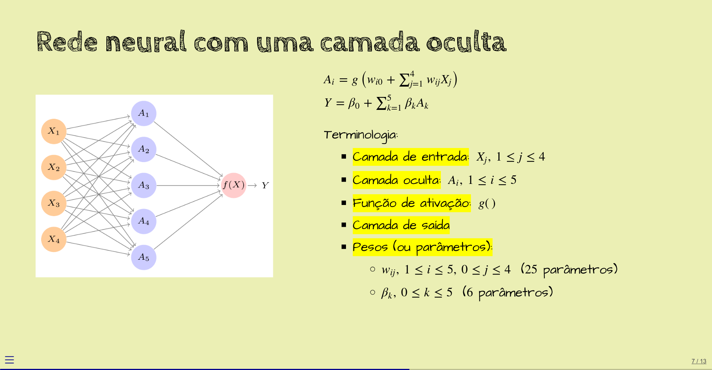
1.4 Exemplos de funções de ativação
Já vimos que a função de ativação costuma ser não-linear.
Um exemplo é a função sigmóide, que sempre retorna valores entre \(0\) e \(1\) (exclusive) e que tem o gráfico mostrado abaixo. Esta função “comprime”, por assim dizer, todos os números reais para o intervalo \((0, 1)\).
Historicamente, a função sigmóide foi uma das primeiras a ser usadas como função de ativação, mas atualmente damos preferência a outras, que são menos problemáticas. Mais adiante, vamos falar sobre isto.
A função sigmóide é útil, por exemplo, quando o nó precisa retornar uma probabilidade (que é um valor entre \(0\) e \(1\)).
Outro exemplo de função de ativação é a ReLU, bem mais simples de ser computada (e entendida). Se o argumento é negativo, a ReLU retorna zero; senão, retorna o próprio argumento. Atualmente, é uma das funções de ativação mais usadas.

Você pode achar que a ReLU, uma função que simplesmente zera os argumentos que estão abaixo de zero, é simples demais para aproximar funções lineares. Este exemplo mostra que não:
Vamos considerar a função \(f(x) = x^2 - 21x + 104\):
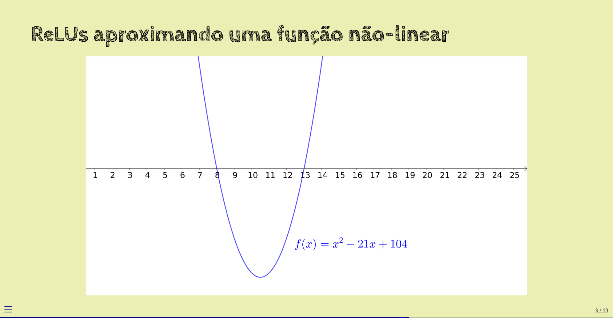
Começamos com uma função linear: \(f_1(x) = x/3 - 10/3\).
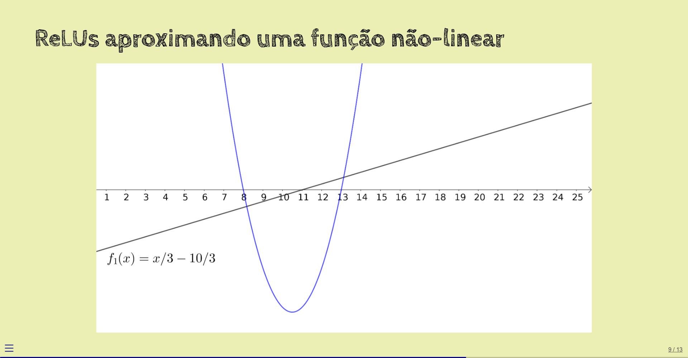
A seguir, aplicamos ReLU a esta reta:
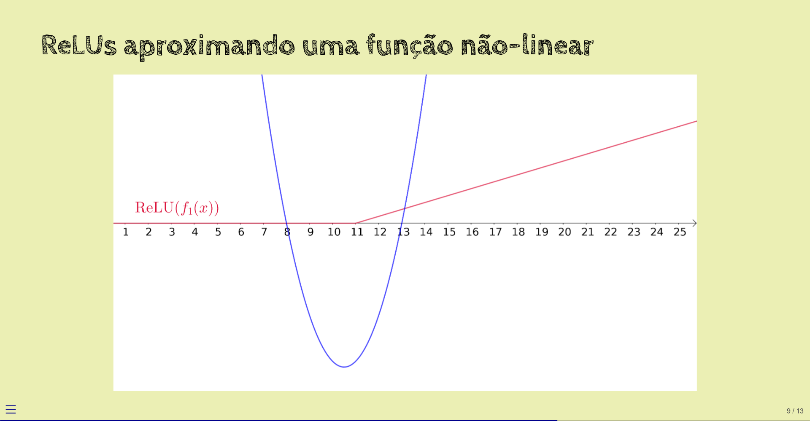
Agora, computamos outra função linear: \(f_2(x) = -x/3 + 3\).
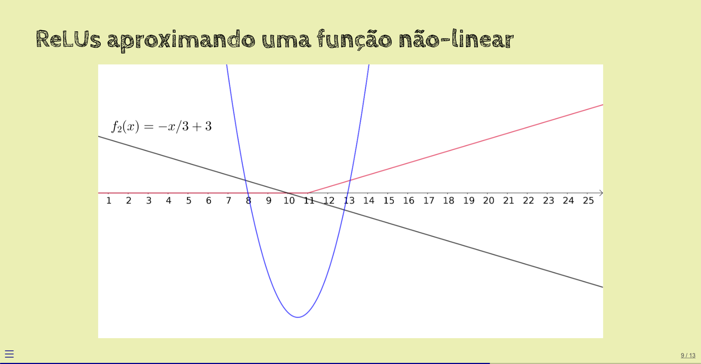
Aplicamos ReLU a esta reta também:
Somamos as duas ReLUs obtidas:
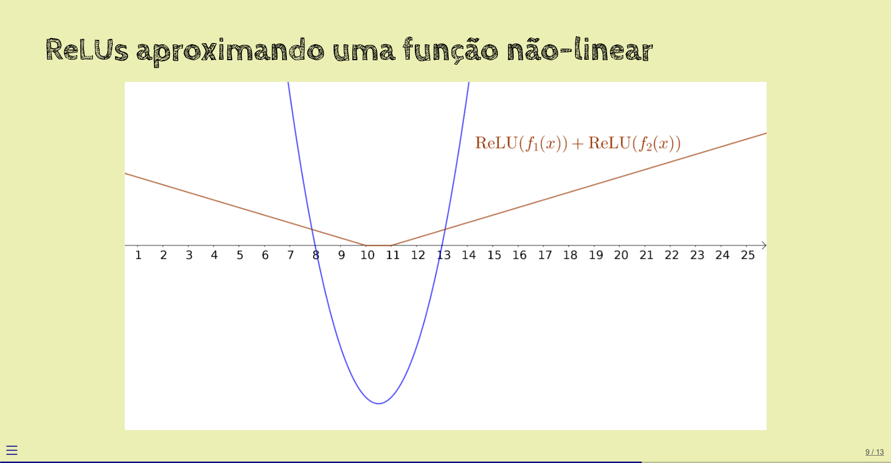
Não ficou muito próxima da função original.
Em vez de somar as duas ReLUs, vamos calcular uma combinação linear delas:
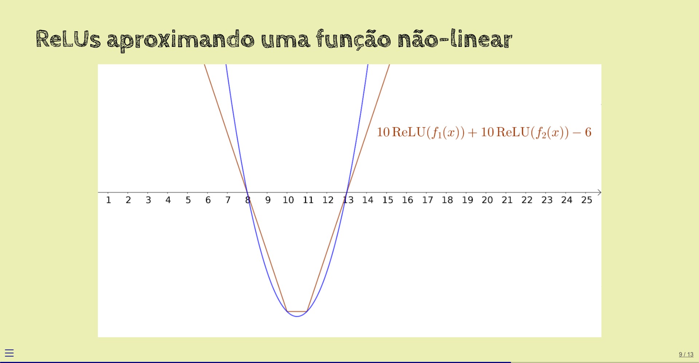
Agora, sim, o resultado aproxima a função \(f\) original.
Se usássemos mais funções lineares e aplicássemos mais ReLUs a elas, a aproximação seria melhor ainda.
1.5 Exemplo: aproximando uma função quadrática
???
1.6 Regressão versus classificação
???
Regressão: saídas da rede são valores numéricos da função que queremos aproximar, como neste exemplo.
Classificação: saídas da rede são rótulos de classes ou probabilidades.
Exemplo de classificação mais adiante.
1.7 Exercícios
???